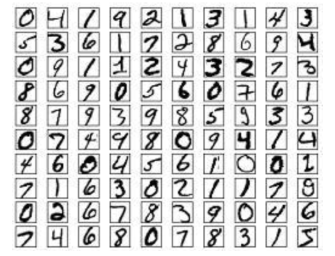
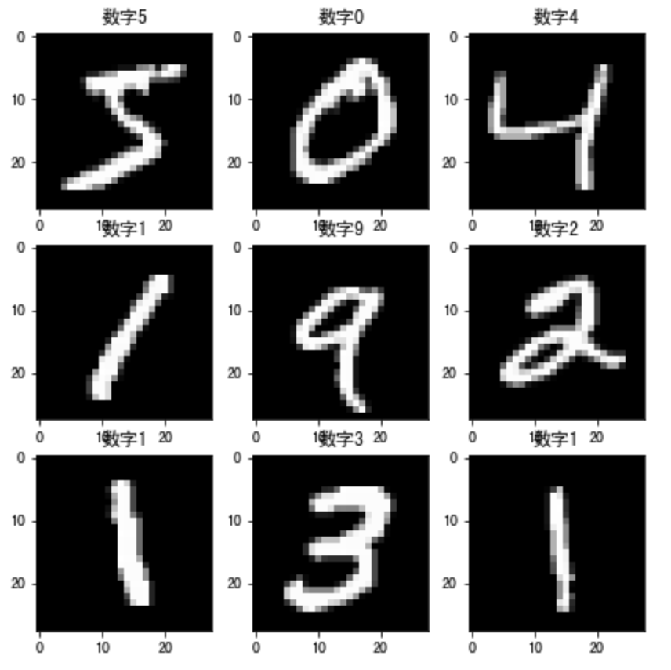
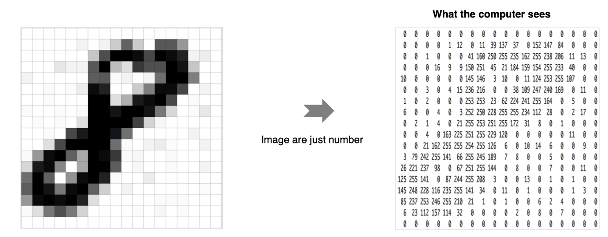
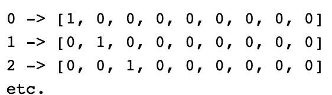
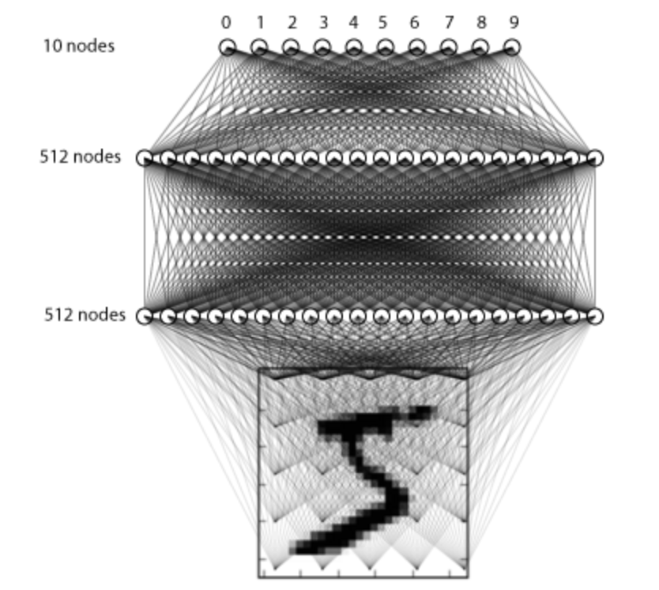
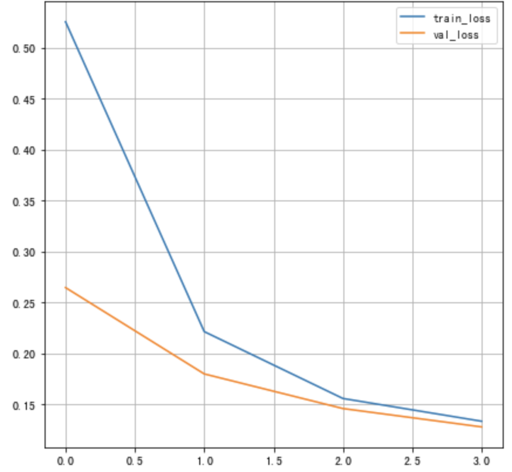
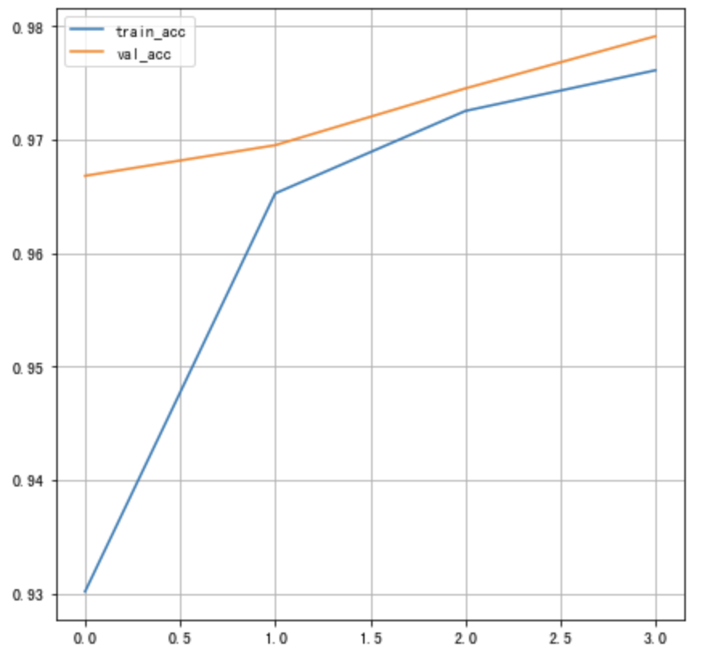
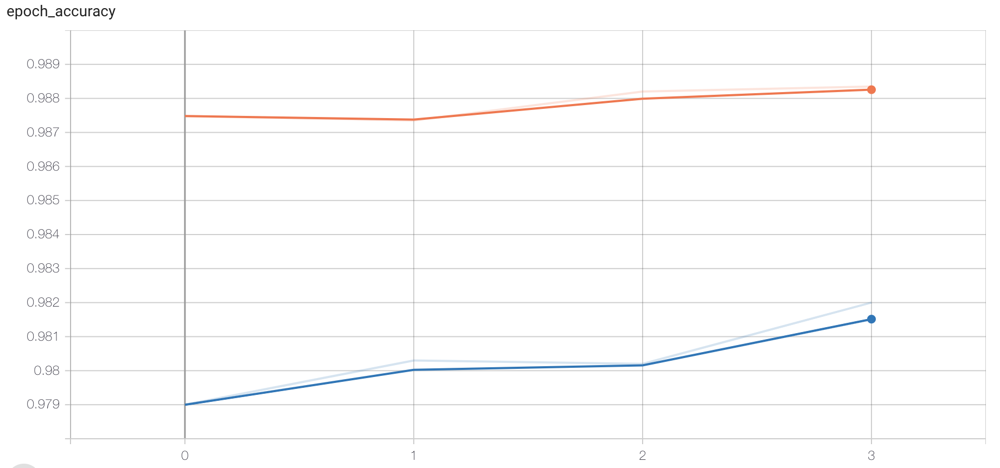
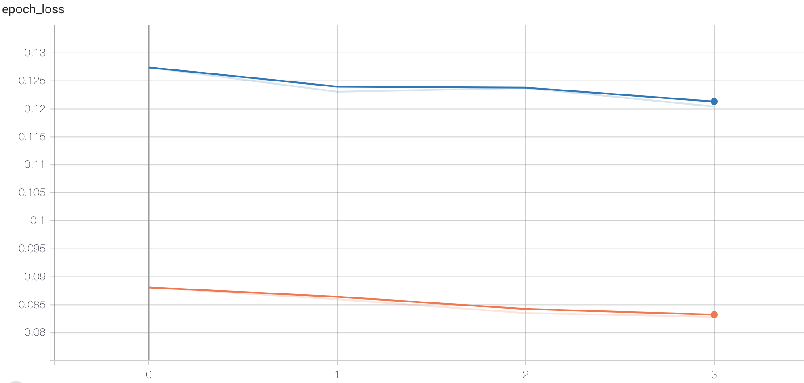

2.5 神经网络案例¶
学习目标
- 能够利用tf.keras获取数据集
- 能够网络多层神经网络的构建
- 能够完成网络的训练和评估

使用手写数字的MNIST数据集如上图所示，该数据集包含60,000个用于训练的样本和10,000个用于测试的样本，图像是固定大小(28x28像素)，其值为0到255。
整个案例的实现流程是：
- 数据加载
- 数据处理
- 模型构建
- 模型训练
- 模型测试
- 模型保存
首先要导入所需的工具包：
# 导入相应的工具包
import numpy as np
import matplotlib.pyplot as plt
plt.rcParams['figure.figsize'] = (7,7) # Make the figures a bit bigger
import tensorflow as tf
# 数据集
from tensorflow.keras.datasets import mnist
# 构建序列模型
from tensorflow.keras.models import Sequential
# 导入需要的层
from tensorflow.keras.layers import Dense, Dropout, Activation,BatchNormalization
# 导入辅助工具包
from tensorflow.keras import utils
# 正则化
from tensorflow.keras import regularizers
1.数据加载¶
首先加载手写数字图像
# 类别总数
nb_classes = 10
# 加载数据集
(X_train, y_train), (X_test, y_test) = mnist.load_data()
# 打印输出数据集的维度
print("训练样本初始维度", X_train.shape)
print("训练样本目标值初始维度", y_train.shape)
结果为：
训练样本初始维度 (60000, 28, 28)
训练样本目标值初始维度 (60000,)
数据展示：
# 数据展示：将数据集的前九个数据集进行展示
for i in range(9):
plt.subplot(3,3,i+1)
# 以灰度图显示，不进行插值
plt.imshow(X_train[i], cmap='gray', interpolation='none')
# 设置图片的标题：对应的类别
plt.title("数字{}".format(y_train[i]))
效果如下所示：

2.数据处理¶
神经网络中的每个训练样本是一个向量，因此需要对输入进行重塑，使每个28x28的图像成为一个的784维向量。另外，将输入数据进行归一化处理，从0-255调整到0-1。

# 调整数据维度：每一个数字转换成一个向量
X_train = X_train.reshape(60000, 784)
X_test = X_test.reshape(10000, 784)
# 格式转换
X_train = X_train.astype('float32')
X_test = X_test.astype('float32')
# 归一化
X_train /= 255
X_test /= 255
# 维度调整后的结果
print("训练集：", X_train.shape)
print("测试集：", X_test.shape）
输出为：
训练集： (60000, 784)
测试集： (10000, 784)
另外对于目标值我们也需要进行处理，将其转换为热编码的形式：

实现方法如下所示：
# 将目标值转换为热编码的形式
Y_train = utils.to_categorical(y_train, nb_classes)
Y_test = utils.to_categorical(y_test, nb_classes)
3.模型构建¶
在这里我们构建只有3层全连接的网络来进行处理：

构建方法如下所示：
# 利用序列模型来构建模型
model = Sequential()
# 全连接层，共512个神经元，输入维度大小为784
model.add(Dense(512, input_shape=(784,)))
# 激活函数使用relu
model.add(Activation('relu'))
# 使用正则化方法drouout
model.add(Dropout(0.2))
# 全连接层，共512个神经元,并加入L2正则化
model.add(Dense(512,kernel_regularizer=regularizers.l2(0.001)))
# BN层
model.add(BatchNormalization())
# 激活函数
model.add(Activation('relu'))
model.add(Dropout(0.2))
# 全连接层，输出层共10个神经元
model.add(Dense(10))
# softmax将神经网络输出的score转换为概率值
model.add(Activation('softmax'))
我们通过model.summay来看下结果：
Model: "sequential_6"
_________________________________________________________________
Layer (type) Output Shape Param #
=================================================================
dense_13 (Dense) (None, 512) 401920
_________________________________________________________________
activation_8 (Activation) (None, 512) 0
_________________________________________________________________
dropout_7 (Dropout) (None, 512) 0
_________________________________________________________________
dense_14 (Dense) (None, 512) 262656
_________________________________________________________________
batch_normalization (BatchNo (None, 512) 2048
_________________________________________________________________
activation_9 (Activation) (None, 512) 0
_________________________________________________________________
dropout_8 (Dropout) (None, 512) 0
_________________________________________________________________
dense_15 (Dense) (None, 10) 5130
_________________________________________________________________
activation_10 (Activation) (None, 10) 0
=================================================================
Total params: 671,754
Trainable params: 670,730
Non-trainable params: 1,024
_________________________________________________________________
4.模型编译¶
设置模型训练使用的损失函数交叉熵损失和优化方法adam，损失函数用来衡量预测值与真实值之间的差异，优化器用来使用损失函数达到最优：
# 模型编译，指明损失函数和优化器，评估指标
model.compile(loss='categorical_crossentropy', optimizer='adam',metrics=['accuracy'])
5.模型训练¶
# batch_size是每次送入模型中样本个数，epochs是所有样本的迭代次数，并指明验证数据集
history = model.fit(X_train, Y_train,
batch_size=128, epochs=4,verbose=1,
validation_data=(X_test, Y_test))
训练过程如下所示：
Epoch 1/4
469/469 [==============================] - 2s 4ms/step - loss: 0.5273 - accuracy: 0.9291 - val_loss: 0.2686 - val_accuracy: 0.9664
Epoch 2/4
469/469 [==============================] - 2s 4ms/step - loss: 0.2213 - accuracy: 0.9662 - val_loss: 0.1672 - val_accuracy: 0.9720
Epoch 3/4
469/469 [==============================] - 2s 4ms/step - loss: 0.1528 - accuracy: 0.9734 - val_loss: 0.1462 - val_accuracy: 0.9735
Epoch 4/4
469/469 [==============================] - 2s 4ms/step - loss: 0.1313 - accuracy: 0.9768 - val_loss: 0.1292 - val_accuracy: 0.9777
将损失绘制成曲线：
# 绘制损失函数的变化曲线
plt.figure()
# 训练集损失函数变换
plt.plot(history.history["loss"], label="train_loss")
# 验证集损失函数变化
plt.plot(history.history["val_loss"], label="val_loss")
plt.legend()
plt.grid()

将训练的准确率绘制为曲线：
# 绘制准确率的变化曲线
plt.figure()
# 训练集准确率
plt.plot(history.history["accuracy"], label="train_acc")
# 验证集准确率
plt.plot(history.history["val_accuracy"], label="val_acc")
plt.legend()
plt.grid()

另外可通过tensorboard监控训练过程，这时我们指定回调函数：
# 添加tensoboard观察
tensorboard = tf.keras.callbacks.TensorBoard(log_dir='./graph', histogram_freq=1,
write_graph=True,write_images=True)
在进行训练：
# 训练
history = model.fit(X_train, Y_train,
batch_size=128, epochs=4,verbose=1,callbacks=[tensorboard],
validation_data=(X_test, Y_test))
打开终端：
# 指定存在文件的目录，打开下面命令
tensorboard --logdir="./"
在浏览器中打开指定网址，可查看损失函数和准确率的变化，图结构等。


6.模型测试¶
# 模型测试
score = model.evaluate(X_test, Y_test, verbose=1)
# 打印结果
print('测试集准确率:', score)
结果：
313/313 [==============================] - 0s 1ms/step - loss: 0.1292 - accuracy: 0.9777
Test accuracy: 0.9776999950408936
7.模型保存¶
# 保存模型架构与权重在h5文件中
model.save('my_model.h5')
# 加载模型：包括架构和对应的权重
model = tf.keras.models.load_model('my_model.h5')
总结
- 能够利用tf.keras获取数据集：
load_data()
- 能够进行多层神经网络的构建
dense,激活函数，dropout,BN层等
- 能够完成网络的训练和评估
fit，回调函数，evaluate, 保存模型